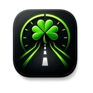

Understand your commute. Drive with insight.
LaneLuck records your active commute drives and turns them into clear, useful insights. Review trip time, distance, average speed, estimated impact, and commute patterns while keeping your drive history private on your iPhone.
An iPhone app by TCQ Consulting LLC, founded by Timothy Connolly.
During an active drive, LaneLuck records information used to summarize distance, speed, route heading, and commute timing. Completed drives are stored locally on your iPhone.
It allows an active drive to continue recording while another navigation app is open or the iPhone is locked. Motion & Fitness permission helps detect driving movements during the drive.
No. This version has no backend, account system, or cloud sync. You can remove drive history with Clear All Drives in Drive History or Settings.
This page describes the app for iPhone. The version and minimum iOS requirement are listed above. Check the linked App Store listing for current availability, device compatibility, pricing, and updates.
Read the LaneLuck privacy policy or contact TCQ support.